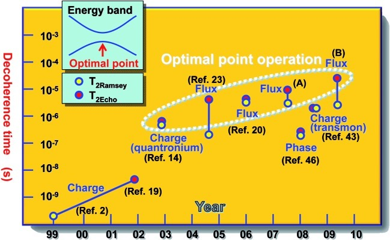

In the past 10 years substantial work has been made towards
making quantum computers a reality. To achieve this, research
teams across the world have been trying to find the most viable
way of representing qubits, or quantum bits, using
physical phenomena. This is similar to how the binary digits 0
and 1 can be represented in modern semiconductors by
electricity either flowing or not flowing through the material.
There are several fields of research in attempting to develop a
way of representing qubits. Amongst these, the four most
notable are superconductivity, trapped ions, topological
quantum computers, and quantum optics. Each of these fields has
attracted research teams hopeful that they can develop a way of
using that phenomena to produce a quantum computer, and trying
to produce the hardware needed for these a computer built by
these means. Here we will discuss what some of these
requirements are, the differences between these four main
approaches for representing qubits, and the prospect that each
of them has for being used in future quantum computers.
Normal conductors are made up of charge carriers that allow
current to flow through the material. In metals charge carriers
are individual electrons. Ultimately no quantum effects are
observed because individual electrons interfere with each other.
By contrast, charge carriers in superconductors are pairs of
electrons rather than single electrons. The spin of electrons
in these pairs form bosons that form Bose-Einstein Condensates,
a state of matter where bosons can occupy a single quantum
energy level, and so as a result the electron pairs in
superconductors can have their flow described by a probability
amplitude function that can have complex values, while in
normal conductors due to interference quantum effects because
of this are not observable.
Various companies and research teams view superconducting
properties to be the leading method for building and developing
quantum computers. Google,[1] IBM,[2] and
private research companies Rigetti[3] and Quantum
Circuits[3] have all placed resources into
developing quantum computers in this way. Through this approach
it has been theoretically suggested that this may enable
quantum error correction on devices that use it. Google’s
superconducting devices have also been successful in showing
the ability to solve special types of quantum problems that
allow them to simulate scenarios such as the interactions
between many elections, called non-stoquastic problems.
[1]
One notable challenge to this approach is its requirement for
extremely efficient cooling in order to reach temperatures low
enough for superconductivity to occur. However, with modern
cryogenic technologies such as dilution refrigerators, a
type of refrigerator that uses a mix of 3He and
4He to achieve temperatures as low as a few
millikelvin[4], the temperatures needed to achieve
superconductivity have become realistically achievable. More
problematic than this is that in quantum computers computation
can only be performed while its coherence is maintained, and
therefore the decoherence time must be sufficiently long.
[5]

This approach uses charged particles in order to perform
calculations in quantum time. Trapped ion quantum computers
are one example of these computers, in which qubits are
stored within the ions’ electronic states. Lasers allow
qubits to become entangled with each other, and information
can be transferred by charge interaction following
Coulomb’s law.
So far quantum computing operations have been successfully
performed using trapped ion systems. As a result, they have
become one of the major areas of research for achieving
quantum computing, and one of the most promising, where as
of May 2011 up to 14 trapped ions have been controllably
entangled.[7]
However, this approach has difficulties with scalability.
The main problem with scalability lies in performing
multiple-qubit operations. To do these, ions need to form
a chain, but as size increases the coupling between each
ion gets weaker. This causes problems for larger numbers of
qubits within ion-trap quantum computers.[8]
This approach has proved quite promising from an engineering
perspective, one such example being the milestone of
successful 14-qubit implementation. Even so, many problems
remain to be overcome regarding scalability before this
approach can be used more effectively.
For more information, see the
implementation page.
Another popular area of research in quantum computing is
quantum optics, which works using the interaction of light
with matter. Photons display entanglement, teleportation,
and can be transformed by quantum logic gates. As each atom
carries energy according to the formula E = hf (h is the
Planck constant; f is the photon’s frequency of vibration)
and light emitted from atoms will only have certain quanta
of energy, light’s quantum properties allow it to be used
for building quantum computer hardware.
The major benefit of this approach is that photons are
largely unaffected by noise, and so are far less severely
affected by decoherence[9]. Because quantum
calculations can only occur during times of coherence, this
is a massively important property in quantum optics.
Furthermore, qubits represented by photons can be
faithfully transmitted between specified
locations.[10]
Despite this, this transmission is only reliable up to
1 km. Another significant disadvantage is that photons do
not interact with each other, as is normally needed for a
quantum computer.[11]
Overall, this approach is promising from a theoretical
perspective, and especially attractive because they are
so weakly affected by decoherence. But due to the
significant problem of photons not interacting with each
other, it may face problems being properly implemented to
make a quantum computer in future compared to other
alternative methods.
Topological quantum computers are a theoretical model for
developing quantum computers build off anyons,
2-dimensional particles that have their world lines (a
particle’s locus through spacetime) intertwine in
3-dimensional space to form what are called braids. In
topological quantum computers, logic gates are made up by
the braids of anyons.
This type of quantum computing is theoretically attractive
because it has higher stability in having its state changed
relative to using trapped quantum particles such as
electrons and photons[12]. Operations on braids
are either performed as changes in the topological phase of
the anions, or as rotation of anions within space.
As of yet, designing real topological computers in practice
has proved difficult. Although this research has the
support from Microsoft research teams, research on using
anions is relatively unexplored compared to other methods
listed on this page other than from a mostly theoretical
perspective. This is because as of 2013, non-abelian anyons
had not been experimentally observed. [13]
Below is a video briefly outlining the principles behind
topological quantum computing.
[14]